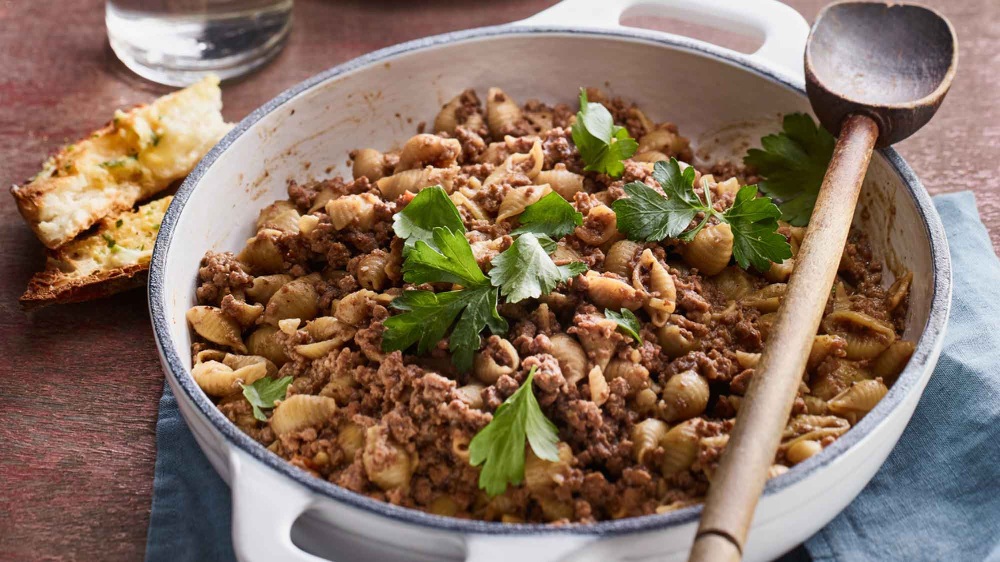

FOODMANIA
Dinner
This weeeks feature dinner is.......PASTA! A tasty way to end your day!
Ingridients (6 serves)
- 2 tablespoons olive oil
- 1 small yellow onion, diced (about a cup)
- 2 pounds lean ground beef
- 3 cloves garlic, minced
- 1 (28- ounce) can tomato sauce
- 1 cup beef broth
- 1 pound Rotini pasta
- 1 cup heavy cream
- 2 cups grated sharp cheddar cheese
Recipe
- In a large, deep skillet heat the olive oil over medium heat. When the oil is hot, add in the diced onions and sauté for 5-6 minutes, until they begin to soften. Add in the ground beef to the skillet and break the meat apart. Cook until no pink remains. Drain excess grease and return the to heat.
- With the heat still on medium, add in the garlic, basil, oregano, salt, red pepper, and flour. Cook for 1 minute, stirring constantly to coat.
- Add in the tomato sauce and broth and stir to combine. Bring to a boil and simmer for 15 minutes. While sauce is simmering, boil Rotini according to pasta directions. Drain.
- Add the cream and pasta to the sauce, stirring to combine. Add in the cheese and stir until melted.
- Garnish with parsley if desired and serve immediately.
Tips
This pasta dish is a creamy, cheesy tomato sauce, with ground beef and rotini! You can add a little more crushed red pepper to make it a little spicier, or leave it out all together. You can even substitute a jar of pre-made pasta sauce instead of the plain tomato sauce and the seasonings if you have a jarred sauce you really love!

Upcoming Posts

Learn how to make my Homemade Raspberry Sorbet recipe and you'll be enjoying this delightful frozen dessert in just minutes! This cold, refreshing summertime dessert will perfect your summer!

Beef Tacos – the old school way!!! With juicy seasoned beef taco meat and crispy shells, this taco recipe is made with a simple yet flavour packed homemade taco seasoning that truly tastes like store bought.

Learn the secret to making the best homemade French fries from russet potatoes right at home! These are easy to make ahead of time and fry or bake in the oven for a quick snack or side dish idea!
Back to the Top